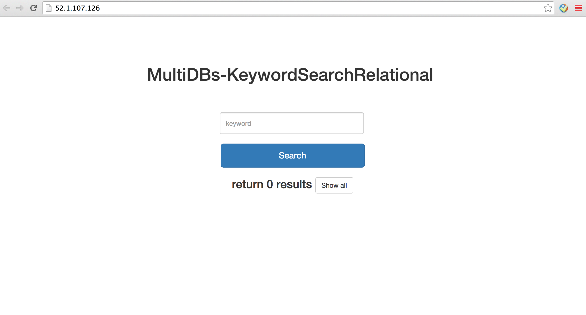
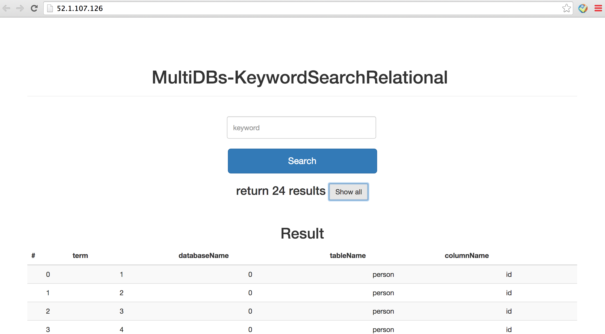
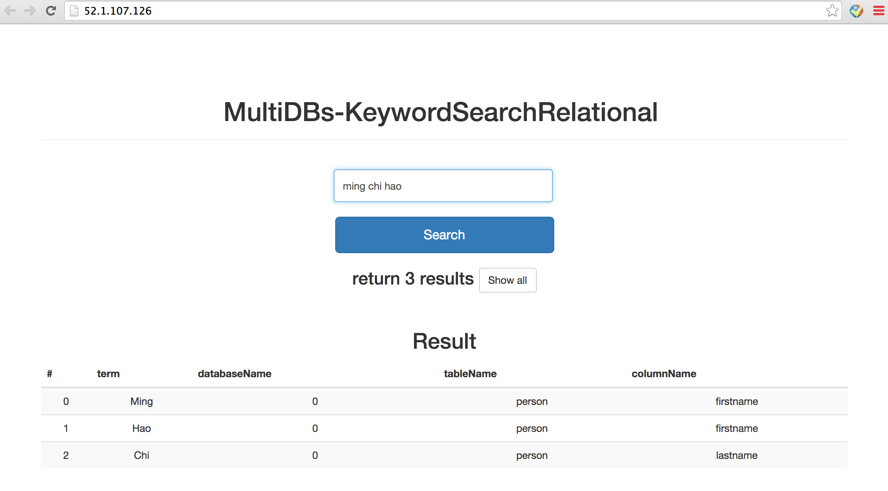

Detailed Description page
This is page includes very (really super very) detailed documentation of our project (not including REST API):
The page has the following aspects of project:What are the main parts of our project, algorithms, not easy concepts, and anything important for people outside of INFSCI 2711 class.
Use cases:
Use case 1: MetaStore is able to send REST request to our project once a user enters database information, telling us that a new datasource was added. After receiving request from MetaStore, SQL queries are generated according to the datasource information.
Use case 2: Our project is able to send REST request to PrestoDB team passing SQL queries and get search results.
Use case 3: Our project is able to build and update indexes of database records based on the results returned by PrestoDB project.
Use case 4: Users are able to search for information in all databases by entering one or more keywords. A list of search results are shown on the page containing those keywords, datasource names (id), table names, and column names where the keywords are found.
Figure 1: Home page
Figure 1 shows the home page of our system. A list of all indexes will be shown once you click on "Show all" button. The results are similar to the example shown in Figure 2.
Figure 2: All indexes
Users can type one or more keywords in the input box and find the results as shown in Figure 3.
Figure 3: Search results